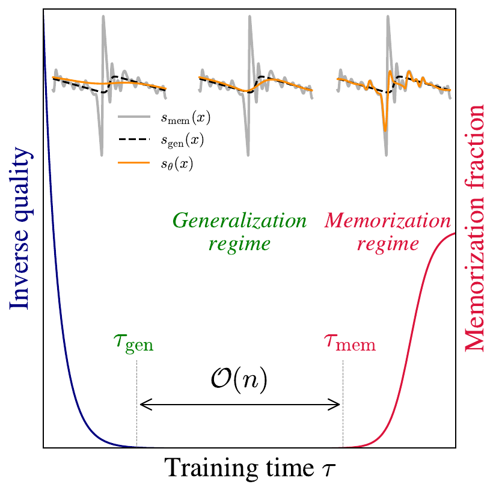
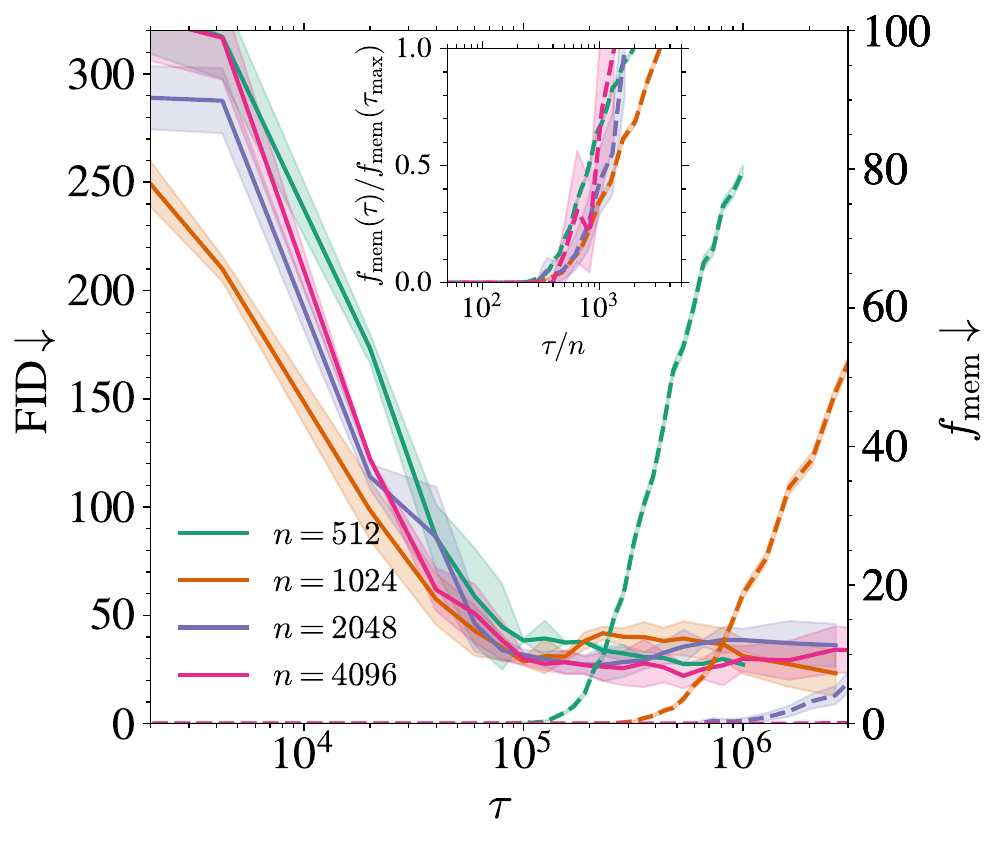
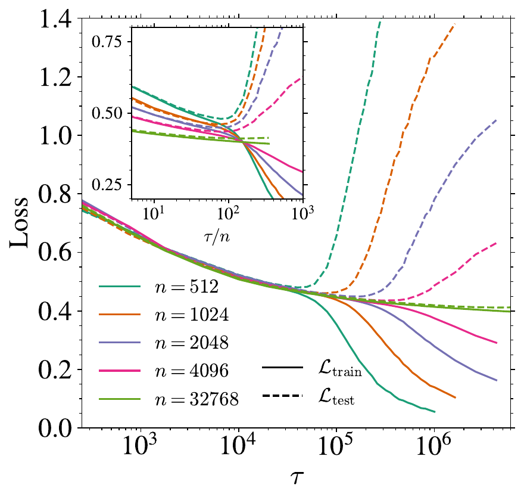
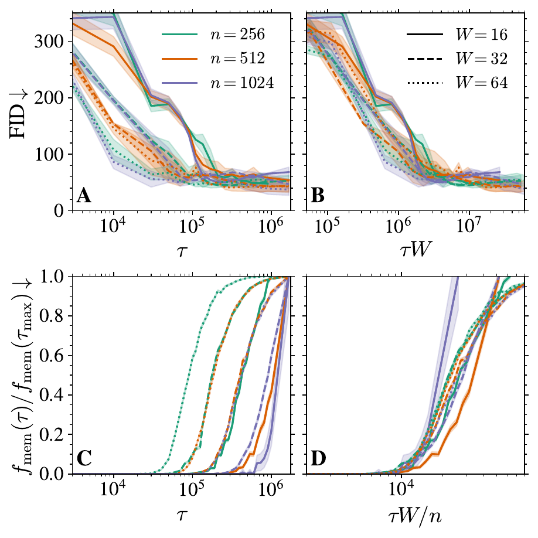
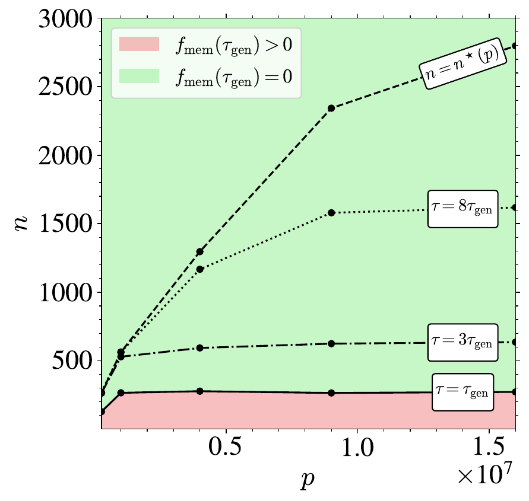
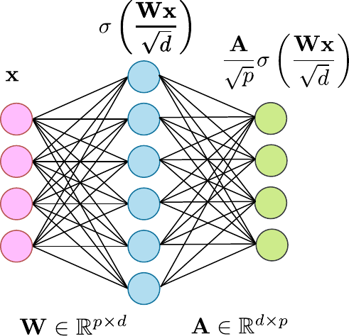
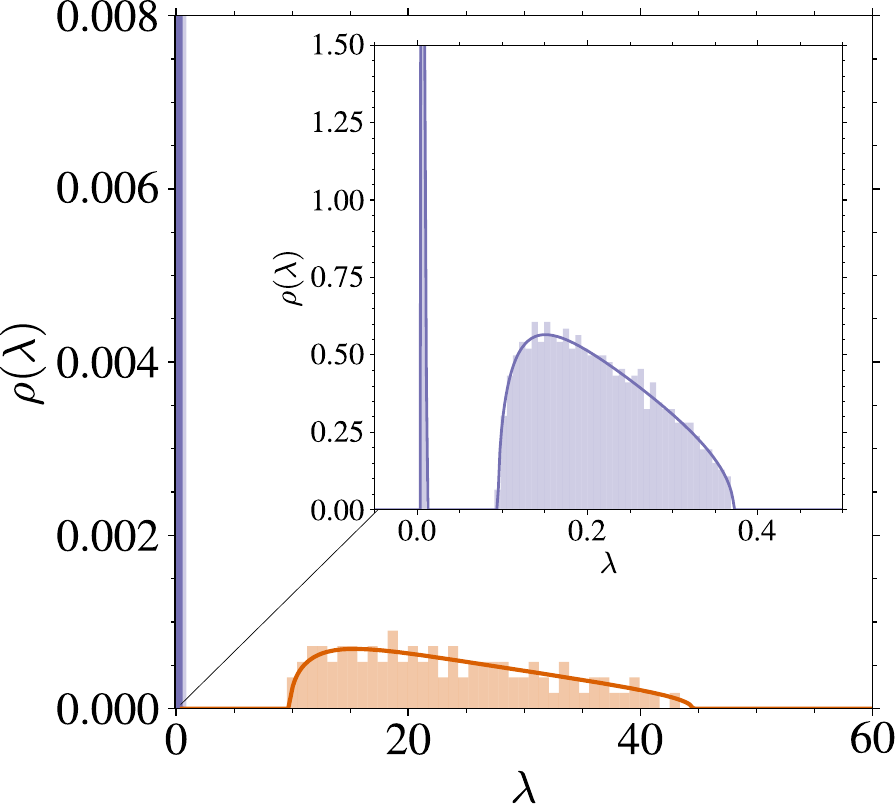
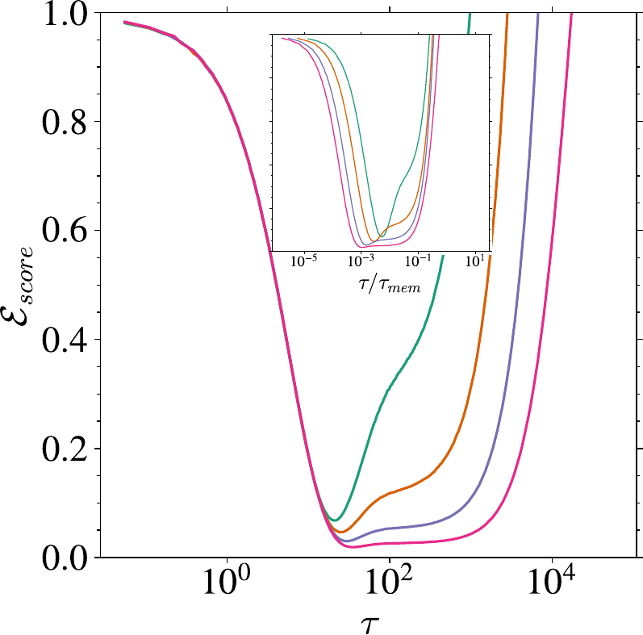
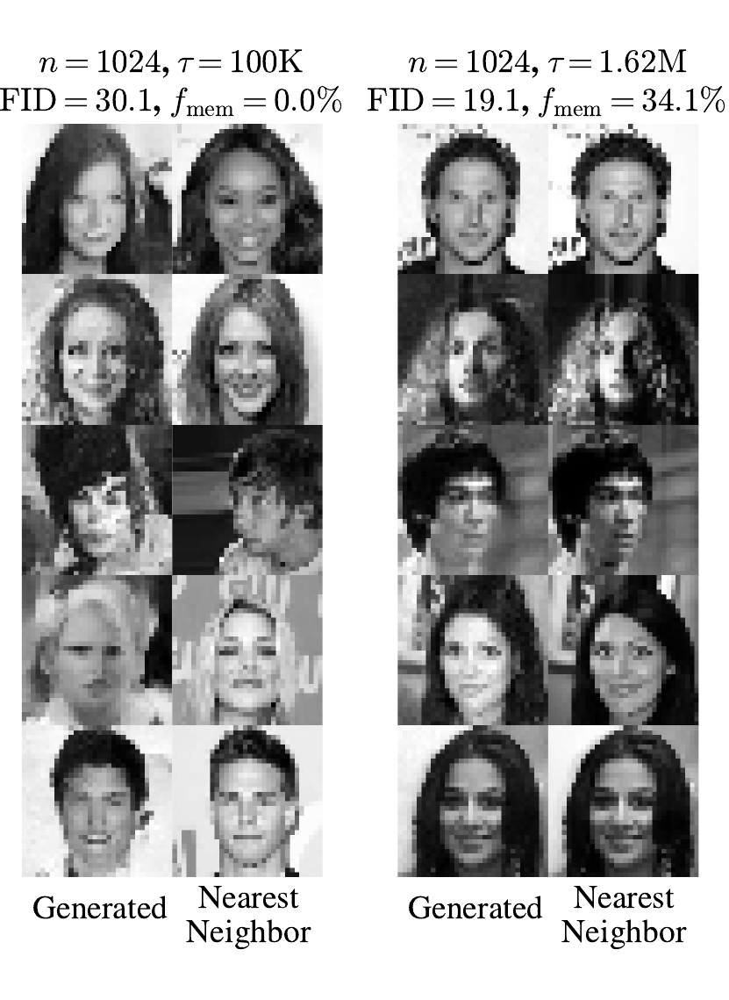

An interactive explainer
Why diffusion models don't memorize
Diffusion models are supposed to memorize. Their loss function has a global minimum that perfectly reproduces every training image. Yet trained DDPMs generate new faces, new landscapes, new everything. Bonnaire and coauthors give the cleanest explanation yet: training has two distinct timescales — one for learning to generalize, one for starting to memorize — and the gap between them grows linearly with the size of the training set. Stop early in that window and you get a generalizing model, for free, with no architectural trick and no explicit regularizer.

Here is a puzzle that should bother anyone who trains diffusion models. The standard score-matching loss has a unique, perfectly-defined global minimum: the so-called empirical score, which is the gradient of a sum of Gaussians centered on each training point. A model that reaches that minimum is mathematically guaranteed to reproduce its training data when you sample from it. There is no escape — the minimum is the minimum. So when you train a U-Net to convergence on 1,024 faces, the math says you should get 1,024 faces back, with some Gaussian wiggle.
But that is emphatically not what happens. State-of-the-art image diffusion models trained on millions of images generate novel images that nobody has ever seen. Even a small U-Net trained on just 1,024 CelebA faces, stopped at the right moment, will hand you brand-new faces — faces that don't appear anywhere in its training set. Why? The optimization landscape says "memorize"; the trained model says "generalize." What gives?
This paper's answer is so clean it is almost embarrassing that it took until 2025 to write down: training never reaches the minimum. Score matching's global minimum is at the bottom of a very narrow basin, and gradient descent — even after millions of steps, even with no regularization, even with vastly more parameters than data points — sits in a wide shallow plateau above it that happens to be the population score. The plateau gets wider as you add data. There is an entire phase of training, identified by two precise timescales, where the model generalizes simply because it has not yet had time to find the memorizing solution.
1. The memorization disaster
Diffusion models work in two halves. A forward process gradually corrupts a data sample $\vx_0$ into pure Gaussian noise by integrating the Ornstein–Uhlenbeck SDE
$$ d\vx = -\vx(t)\,dt + d\vB(t), $$
so that at time $t$ the marginal is $\vx_t = e^{-t}\vx_0 + \sqrt{\Delta_t}\,\vxi$ with $\Delta_t = 1 - e^{-2t}$. The reverse process undoes this by running
$$ -d\vx = \big[\vx(t) + 2\,\vs(\vx, t)\big]\,dt + d\vB(t) $$
where $\vs(\vx, t) = \nabla_\vx \log P_t(\vx)$ is the score: a vector field that, at every noise level, points toward higher data density. Sample Gaussian noise, follow the reverse SDE, and out comes a sample from $P_0$ — provided you know the right score. Score matching gives a recipe for estimating it from data: minimize
$$ \mathcal{L}_t(\vtheta) = \frac{1}{n}\sum_{\nu=1}^n \mathbb{E}_\vxi \Big[\big\lVert \sqrt{\Delta_t}\,\vs_\vtheta(\vx_t^\nu(\vxi), t) + \vxi \big\rVert^2\Big] $$
over a parametric class — typically a U-Net. So far so good. Now here is the catch. This loss has an exact global minimizer in closed form, the empirical score
$$ \vs_\mathrm{emp}(\vx, t) = \nabla_\vx \log P_t^\mathrm{emp}(\vx), \quad P_t^\mathrm{emp}(\vx) = \frac{1}{n (2\pi\Delta_t)^{d/2}}\sum_{\nu=1}^n e^{-\lVert \vx - \vx^\nu e^{-t}\rVert^2 / (2\Delta_t)}. $$
This is a Gaussian-blurred mixture peaked on the noised training samples. The score it produces points, at the end of the reverse process, directly back at one of the original $\vx^\nu$. Sample from this empirical score and you get back training images, period. As Biroli and coauthors have shown, this memorization is unavoidable for any score model expressive enough to represent $\vs_\mathrm{emp}$, unless $n$ grows exponentially with the data dimension $d$. For CelebA at $32 \times 32$, $d = 1024$, so the threshold is unreachable.
So either (a) modern diffusion models are not expressive enough to fit the empirical score — which is hard to believe for a U-Net with 16M parameters trained on 1,024 images — or (b) training simply doesn't reach the empirical score. Previous work pointed at architectural inductive biases (Kamb & Ganguli), finite learning rate (Wu et al.), and limited capacity. Bonnaire and coauthors show that even after stripping all of those out, there is a fourth force at work — pure training dynamics — and it dominates everything else.
2. Two timescales
The empirical observation that organizes the entire paper is this: when you train a U-Net on $n$ CelebA faces and watch what comes out at different points during training, the dynamics break into two cleanly separated phases.
At a time the authors call $\tau_\mathrm{gen}$, the model goes from outputting noise to outputting good, novel faces. The FID drops sharply and then plateaus. The generated samples do not match any training image. The model has clearly learned something about the structure of human faces.
Then nothing happens for a long while. The FID stays flat. The generated samples stay novel.
Eventually, at a much later time $\tau_\mathrm{mem}$, the trap snaps shut. Generated samples become near-duplicates of training images. The memorization fraction $f_\mathrm{mem}$ — the share of generated samples whose nearest training neighbor is at least three times closer than their second-nearest — rises from 0% toward a substantial fraction. Crucially:
- $\tau_\mathrm{gen}$ does not depend on $n$. Whether you train on 128 faces or 32,768 faces, the FID hits its minimum at around the same number of SGD steps.
- $\tau_\mathrm{mem}$ scales linearly with $n$. Double the dataset size, you need to train roughly twice as long before memorization kicks in.
This is the whole story compressed into one observation. The generalization window $[\tau_\mathrm{gen}, \tau_\mathrm{mem}]$ widens linearly with $n$. If you stop training in that window, you have a model that produces good samples and does not memorize, full stop. Below is the actual experiment.

Look at the inset. Plotted against $\tau / n$, every memorization curve, for $n$ spanning two and a half orders of magnitude, lands on top of the others. That is what a clean linear scaling looks like. It is not a fit; it is a collapse.
3. The expanding window
The animation below shows the central claim. Two curves: blue is generation quality (smaller is better), red is memorization fraction. The green stripe is the generalization window $[\tau_\mathrm{gen}, \tau_\mathrm{mem}]$ — the interval where the model is both good and novel. Once the first sweep is done, $n$ doubles; the right edge of the window slides over, the window opens wider.
As $n$ grows, the window expands rightward. $\tau_\mathrm{gen}$ stays put because the generalization regime depends only on the population density — and that density is what the model sees in expectation regardless of how many concrete samples are drawn from it. $\tau_\mathrm{mem}$ recedes because finding the empirical score requires resolving sample-specific features, and there are linearly more samples to resolve.
The widget below lets you play with both axes interactively. Drag the dataset size $n$ to see how far $\tau_\mathrm{mem}$ slides; drag the training time $\tau$ to see which phase the model is currently in.
Pick any $n \geq 4$ on the slider. The green window is wide. Stop your training anywhere inside it and you get a generalizing model. The exact stopping point doesn't matter — you have an enormous margin. This is what the paper calls implicit dynamical regularization: training itself, by being slow enough to find the empirical score, gives you a long plateau at a good solution.
4. What the score looks like during training
To build the right intuition, drop into one dimension. Suppose your true data distribution is a Gaussian mixture with eight modes, and you draw $n$ samples from it. There are now two candidate score functions floating around:
- The population score $\vs_\mathrm{pop}(x, t) = \nabla \log P_t(x)$, derived from the true mixture. This is smooth, has eight wide attractors corresponding to the modes, and depends only on the underlying distribution — not on which particular samples you drew.
- The empirical score $\vs_\mathrm{emp}(x, t) = \nabla \log P_t^\mathrm{emp}(x)$, derived from the $n$ samples. This is jagged at low noise: it has $n$ sharp attractors sitting precisely on the training points. As $t \to 0$ each attractor's pull becomes brutally local.
What does training do? It begins from random initialization and walks toward the empirical score (because that's the global minimum of the loss). But it does not walk in a straight line — it walks along the gradient of the loss, and that loss landscape is smoother in the directions corresponding to large-eigenvalue modes of the score-matching Gram matrix. Smooth, low-frequency features get learned first.
The smooth, low-frequency content of the empirical score is, by construction, very close to the population score (you can think of $\vs_\mathrm{emp}$ as $\vs_\mathrm{pop}$ plus a high-frequency perturbation that depends on which particular samples you drew). So the model spends a long time approximating the population score while only slowly resolving the sample-specific bumps. This is the well-known spectral bias of neural networks (Rahaman et al.), surfacing in a new and consequential setting.
Drag $\tau$ from left to right and watch the orange curve change shape. Early on it tracks the smooth gray dashed line (the population score). Late, it snaps onto the red dashed line (the empirical score) with sharp swings at every training point. The middle of the slider — the dynamical regularization regime — is where the model is closest to the truth, even though it is far from the loss minimum. This is the paper's mechanism in one picture.
5. Why it scales with $n$
The linear scaling $\tau_\mathrm{mem} \propto n$ is not obvious. A first guess might be: with $n$ samples and batch size $B$, each sample is seen on average $\tau B / n$ times, so you need $n$ times as many steps to expose each sample the same number of times. That guess is wrong. The authors verify this directly by running with full-batch updates ($B = n$) — every sample is seen exactly once per step, so all $n$ values have the same per-sample exposure count at fixed $\tau$. The scaling persists.
The real reason has to do with the geometry of the loss landscape. Adding training samples does not just add gradient signal; it reshapes the loss landscape so that the high-frequency, sample-specific minimum becomes harder to reach. In the random-features model studied in Section 3 of the paper, this shows up cleanly: the eigenvalues of the score-matching Gram matrix split into two well-separated bulks, and the smallest eigenvalue of the larger bulk — which controls the memorization timescale — scales as $1/n$. We'll get to that.
The same scaling holds with full-batch updates, with Adam (much faster timescales but identical ratio), with classifier-free guidance, and on synthetic Gaussian mixtures. It is robust. It is not an artifact of optimizer, batch, or dataset.

The middle panel is the cleanest piece of evidence. For small $\tau$, the learned score is the same on training and held-out images — the model has not yet started to specialize. For large $\tau$, the training loss continues to fall while the test loss climbs, which is the textbook fingerprint of overfitting. The crossover time scales with $n$.
What about the model size?
Holding $n$ fixed, increasing the U-Net width $W$ shrinks both timescales. The paper finds the clean scalings
$$ \tau_\mathrm{gen} \propto W^{-1}, \qquad \tau_\mathrm{mem} \propto n\,W^{-1}. $$
Bigger models reach the generalization plateau faster — they have more parameters to use for low-frequency modes — but they also fall into memorization faster. The ratio $\tau_\mathrm{mem}/\tau_\mathrm{gen}$ is approximately $n / \mathrm{const}$, independent of $W$ for moderately overparametrized models. So you can always early-stop into the safe window, regardless of how big your model is.


6. The theory: random features
The numerical story is convincing on its own, but it leaves the question: why two timescales? Why does the loss landscape split into a fast generalization mode and a slow memorization mode, separated by a long plateau?
The paper answers this in a tractable model: replace the U-Net by a Random Features Neural Network
$$ \vs_\vA(\vx) = \frac{\vA}{\sqrt{p}}\,\sigma\!\left(\frac{\vW \vx}{\sqrt{d}}\right), $$
where $\vW \in \mathbb{R}^{p \times d}$ is a Gaussian random projection that is frozen, and only the output layer $\vA \in \mathbb{R}^{d \times p}$ is trained. The score-matching loss is then quadratic in $\vA$, gradient descent has a closed-form solution, and the timescales of the dynamics are governed by the inverse eigenvalues of a $p \times p$ matrix $\Delta_t \vU / \psi_p$ where $\psi_p = p/d$ and $\psi_n = n/d$.
In the high-dimensional limit $d, p, n \to \infty$ with $\psi_p$ and $\psi_n$ fixed, the authors compute the eigenvalue density of $\vU$ using the replica method. In the overparametrized regime $\psi_p > \psi_n \gg 1$:
$$ \rho(\lambda) = \Big(1 - \tfrac{1 + \psi_n}{\psi_p}\Big)\delta(\lambda - s_t^2) + \tfrac{\psi_n}{\psi_p}\,\rho_1(\lambda) + \tfrac{1}{\psi_p}\,\rho_2(\lambda). $$
Three pieces: a delta peak at $s_t^2$ (whose eigenvectors don't affect either loss and can be ignored), a bulk $\rho_1$ supported on $\big[s_t^2 + v_t^2(1 - \sqrt{\psi_p/\psi_n})^2,\; s_t^2 + v_t^2(1 + \sqrt{\psi_p/\psi_n})^2\big]$, and a bulk $\rho_2$ on scale $\psi_p$.
The two bulks $\rho_1$ and $\rho_2$ are on different scales: $\rho_1$ on scale $\psi_p / \psi_n$, $\rho_2$ on scale $\psi_p$. They are cleanly separated, which means the dynamics have two cleanly separated timescales.


Each eigenvalue $\lambda$ corresponds to a relaxation time $\tau = \psi_p / (\Delta_t \lambda)$ in the gradient flow. Large $\lambda$ relaxes quickly; small $\lambda$ relaxes slowly. So the two bulks translate directly into:
- $\tau_\mathrm{gen} \sim 1/\Delta_t$, set by the large eigenvalues in $\rho_2$. This is the fast mode that learns the smooth, population-score part of the target. It depends on $\vSigma$ (the population covariance) but not on which specific samples you drew, which is why $\tau_\mathrm{gen}$ is independent of $n$.
- $\tau_\mathrm{mem} \sim \psi_n / \Delta_t = n/(d\Delta_t)$, set by the smallest eigenvalue in $\rho_1$. This is the slow mode that resolves the sample-specific fine structure of the empirical score — and it gets linearly slower as $n$ grows, because the bulk $\rho_1$ has support on scale $\psi_p/\psi_n = pd/n$, so its left edge $\lambda_\min$ scales as $1/\psi_n$.
The linear scaling $\tau_\mathrm{mem} \propto n$ comes out of the algebra of the spectrum, in the simplest possible model where it could appear at all. The U-Net experiments confirm that the same scaling persists in the full nonlinear setting, but the random-features model tells you why: it is a generic feature of overparametrized score learning, not an artifact of any architecture.

7. The full phase diagram
Putting the pieces together, the paper organizes everything into a phase diagram in the $(n, p)$ plane (size of training set, number of model parameters). At any chosen training time $\tau$, you can ask: for what combinations of $n$ and $p$ does the model generalize, and for what combinations does it memorize?
There are three regimes:
- Memorization ($n$ small relative to $p$, and $\tau$ large): the model has enough capacity to memorize, and you've trained long enough to find the empirical score. Samples are copies of training data.
- Dynamical regularization (intermediate $n$, any $p$, $\tau \in [\tau_\mathrm{gen}, \tau_\mathrm{mem}]$): the model could memorize given infinite training, but you've stopped early. This is where the paper lives.
- Architectural regularization ($n > n^\star(p)$, any $\tau$): the model is not expressive enough to memorize the $n$ samples even at $\tau \to \infty$. The score it learns is a smooth interpolant that doesn't depend on the particular samples.
The widget below lets you click anywhere in the $(n, p)$ plane and see which regime applies. Move the $\tau$ slider to watch the dynamical-regularization region grow at the expense of memorization: at $\tau = \tau_\mathrm{gen}$ the safe zone is huge; at $\tau \to \infty$ it shrinks back to just the architectural-regularization region.
The takeaway is that the safe early-stopping zone is much larger than the architectural-regularization zone. Practically: you do not need to crank the dataset size up to the architectural threshold $n^\star(p)$ to get a non-memorizing model — early stopping puts you in the safe zone with vastly less data.
8. Why this works
It is worth pausing to make the intuition concrete. Three forces are at play.
Spectral bias
Neural networks trained by gradient descent learn low-frequency components of a target function before high-frequency ones. This is well documented for supervised learning, and the paper shows it operates identically for score learning. The population score, being a gradient of a smooth density, is dominated by low frequencies; the empirical score adds high-frequency bumps at each training point. Spectral bias is what pulls the model toward the population score first.
The empirical score is “population + perturbation”
Mathematically, you can write
$$ \vs_\mathrm{emp}(\vx, t) = \vs_\mathrm{pop}(\vx, t) + \delta\vs(\vx, t; \{\vx^\nu\}) $$
where $\delta\vs$ is the dataset-dependent perturbation. The perturbation has support on length scales much smaller than the modes of $P_t$, and crucially its amplitude shrinks with $n$ (more samples average out to a smoother empirical density). So the gap that the model has to traverse from "matches the population score" to "matches the empirical score" gets longer as $n$ grows. That is the linear scaling.
The plateau is wide
It is not just that the generalization point is hit first — it is that the model sits there for a long time. This is because the high-frequency modes of the score-matching Gram matrix have small eigenvalues, so the corresponding directions are flat in the loss landscape. Gradient descent makes essentially no progress along them until very late. Bonnaire and coauthors compute this directly for the random-features model: $\lambda_\min$ of the second bulk scales as $1/n$, giving relaxation time proportional to $n$.
You can think of training as a search through a landscape with two valleys at very different depths and very different widths: a wide shallow valley (population score) reached quickly, and a narrow deep valley (empirical score) reached much later. Adding training data deepens and narrows the deep valley while leaving the shallow one alone.
The nearest-neighbor ratio above is the paper's concrete definition: a generated sample $\vx_\tau$ counts as memorized if its distance to the nearest training point is less than $k = 1/3$ times its distance to the second nearest. The threshold is loose enough to ignore noisy reconstructions and tight enough to flag near-duplicates. Drag the generated point inside the cluster around any training image; the ratio drops below $1/3$ and the indicator flips to memorized.
9. Results at a glance
Most of the headline numbers are scalings, not benchmarks, but a few concrete results are worth pinning down.
| Setting | Quantity | Value | Source |
|---|---|---|---|
| CelebA, U-Net $W = 32$, $p = 4 \times 10^6$ | $\tau_\mathrm{gen}$ (SGD steps) | $\approx 10^5$, independent of $n$ | Fig. 2 (left) |
| $\tau_\mathrm{mem}$ scaling | $\tau_\mathrm{mem} \propto n$, all curves collapse against $\tau/n$ | Fig. 2 (left, inset) | |
| $n = 1024$ at $\tau = 190$K vs $\tau = 1.62$M | FID 35.1, $f_\mathrm{mem} = 0\%$ early; FID 35.7, $f_\mathrm{mem} = 47.2\%$ late | App. A.1 | |
| CelebA, varying width $W$ | $\tau_\mathrm{gen}$ scaling with $W$ | $\tau_\mathrm{gen} \propto W^{-1}$ | Fig. 3 panel B |
| $\tau_\mathrm{mem}$ scaling with $W$ | $\tau_\mathrm{mem} \propto n W^{-1}$ | Fig. 3 panel D | |
| Robustness checks | Full-batch updates ($B = n$) | $\tau_\mathrm{mem} \propto n$ still holds — not from sample repetition | App. A.2 |
| Adam optimizer | Same two-phase dynamics, much fewer steps | App. A.3 | |
| RFNN theory | $\tau_\mathrm{mem}$ from spectrum | $\tau_\mathrm{mem} = \psi_p / (\Delta_t \lambda_\min) \sim \psi_n / \Delta_t$ | Thm. 3.2 |
Memorization fraction $f_\mathrm{mem}$ defined by the nearest-neighbor ratio with $k = 1/3$, as in Yoon et al. and Gu et al. FID computed against 10K held-out test samples with 10K generated samples, averaged over 5 disjoint test splits.

10. What it means
This paper shifts the story about why diffusion models work. The dominant narrative used to be a mixture of architectural inductive bias (U-Nets favor smooth functions), capacity limits (you can't memorize what you can't represent), and noise from SGD (finite learning rate adds regularization). All of these are real and all of them matter, but they are not enough by themselves to explain why a 16M-parameter U-Net trained on 1,024 images for two million steps doesn't memorize. None of them produce a linear-in-$n$ scaling.
What Bonnaire and coauthors add is a fourth force, and arguably the dominant one: the optimization landscape of score matching has a wide plateau corresponding to the population score, and the descent into the empirical-score minimum is slow enough that you never reach it in practice when $n$ is moderately large. Early stopping in the right window — a window that opens linearly with dataset size — gives you a generalizing model essentially for free.
What this means for practitioners
- Early stopping is not optional. For small-to-moderate datasets, training to convergence on score matching is the worst thing you can do. There is a sweet spot, and the further past it you go, the more memorization you accumulate.
- The sweet spot is wider than you think. $\tau_\mathrm{gen}$ and $\tau_\mathrm{mem}$ are easy to detect: $\tau_\mathrm{gen}$ from FID plateau, $\tau_\mathrm{mem}$ from nearest-neighbor ratio. The gap between them is roughly $n / n_0$ where $n_0$ is the dataset size at which they coincide.
- Adam buys you speed, not safety. The two-phase structure is the same; only the absolute timescales shrink. The scaling $\tau_\mathrm{mem} \propto n$ is invariant.
- Larger models help too, but symmetrically. Both $\tau_\mathrm{gen}$ and $\tau_\mathrm{mem}$ scale as $1/W$, so larger U-Nets reach the safe window faster but also fall through it faster. The shape is preserved.
Open problems
- How do absolute timescales depend on the conditioning variable? The paper shows the scaling holds with classifier-free guidance, but it would be valuable to know whether different conditioning classes can enter generalization or memorization at different times.
- Where does the picture break for very high-dimensional natural data? All experiments cap at $32 \times 32$ grayscale; the scaling laws should extend, but the constants almost certainly don't.
- What's the analogous picture for flow matching? The mechanism — slow descent toward a sharp empirical minimum — should generalize to any score-based or flow-matching generator. Confirming this would unify a lot of generative-model regularization theory.
- Can you predict $\tau_\mathrm{gen}$ and $\tau_\mathrm{mem}$ ahead of time? If the random-features prediction $\tau_\mathrm{mem} \sim n / (d \Delta_t)$ holds for U-Nets up to a constant, you could compute the safe stopping window before running training.
The bottom line
Diffusion models don't memorize because they don't have time to. The empirical-score minimum is at the bottom of a deep narrow valley; gradient descent spends most of training on a wide shallow plateau corresponding to the population score, and that plateau gets wider — linearly — as you add data. Implicit dynamical regularization is now the simplest plausible explanation for why your DDPM produces novel faces instead of perfect reproductions of its training set. The training loss says "memorize." The training dynamics says "generalize." The dynamics wins, by a margin that scales with $n$.